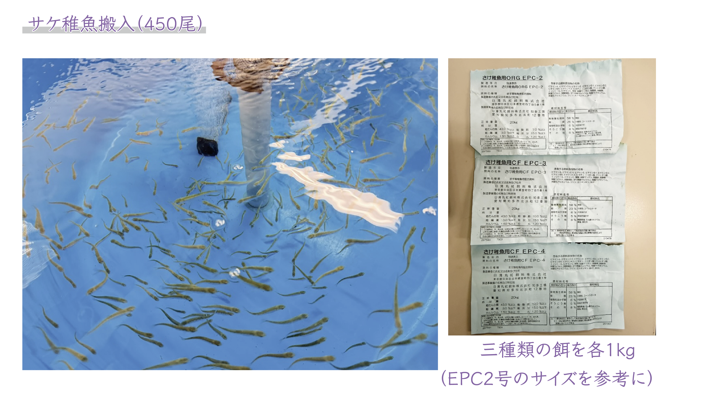
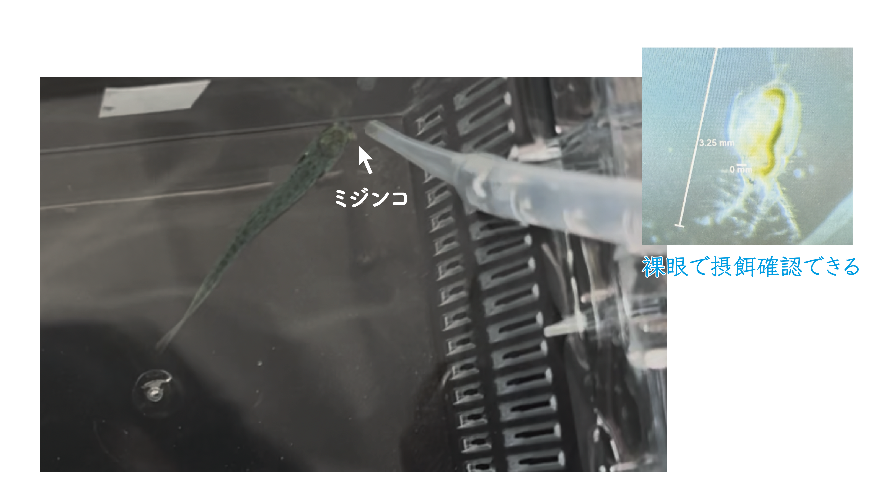
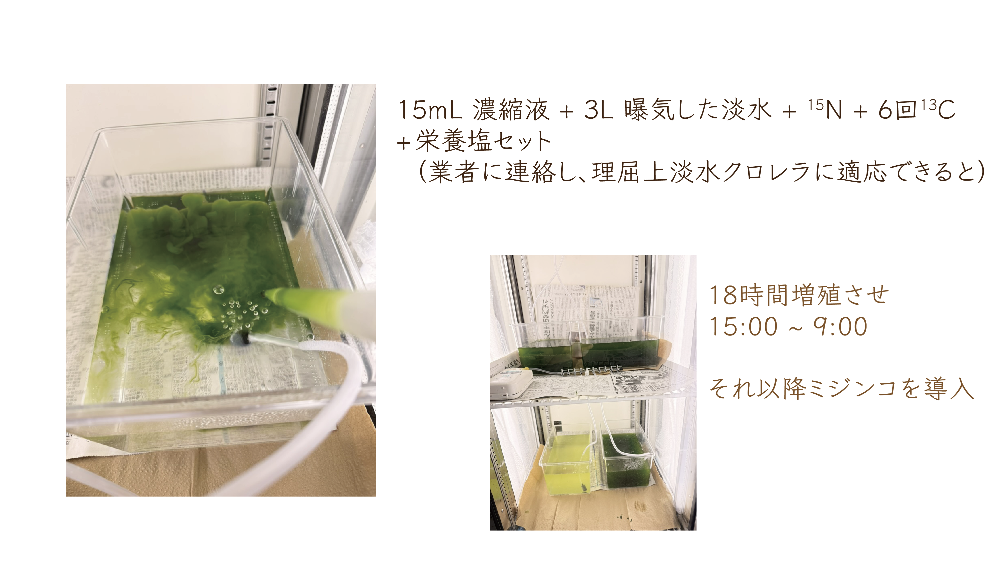

2026-04-08
サケ稚魚搬入
450尾 / 10ºC / 500ℓタンクで一時蓄養（1 day）

Labelled feed experiment record
450尾 / 10ºC / 500ℓタンクで一時蓄養（1 day）

10時から海水に入れ、海水に慣れる余裕をあけて24時間給餌しない。

ラベル餌の投与開始。摂餌状況と餌の見え方を記録。


フンの色・形状・排出の有無を確認


クロレラ→ミジンコ→サケ





ミジンコ投与時の摂餌反応


ミジンコ投与時の摂餌行動